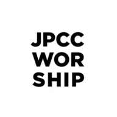

JPCC Worship People
Pilih halaman
Jadwal Pelayanan
Cari jadwalmu, isi blockout, izin / tukar jadwal.
Evaluasi Internal
Evaluasi pelayanan antar anggota tim.
Evaluasi Eksternal
Masukan ibadah dari jemaat, campus pastor & tim lain.